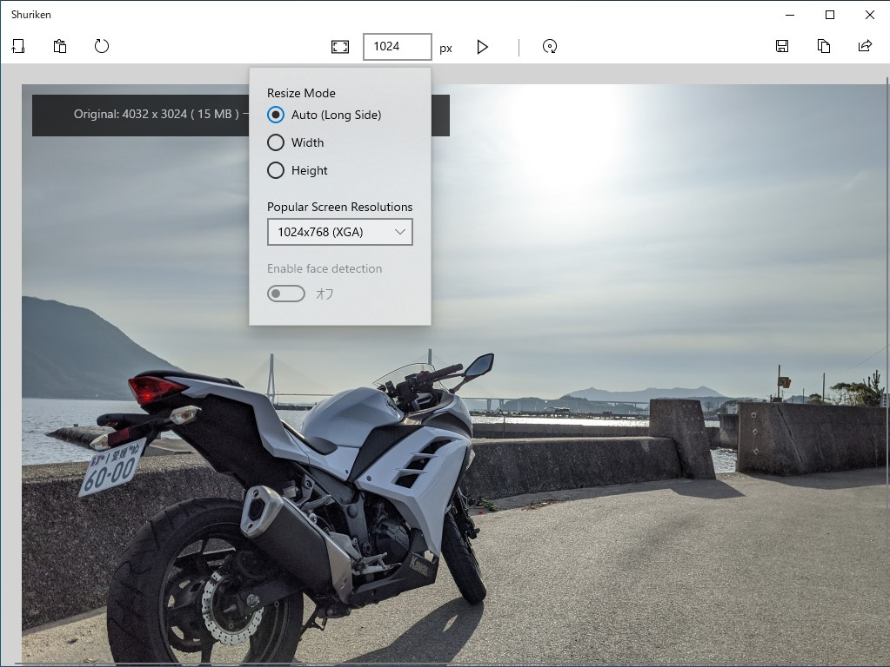

Shriken 1.0.0
執筆日時：

ブログ掲載のために画像をリサイズするだけのアプリ「Shriken」をリリースしました。「スマホ同期」で［共有］→ 画像をリサイズしてクリップボードへコピー → はてなブログへ貼り付ける というプロセスがちょっとだけ簡単になります*1。
とりあえずストアに出して、Surface Pro X で使いたいと思い（だから ARM64 ビルドもあるよ！）、不安定な機能は全部削除しているので、普通の人はあまりこれのお世話になることはないと思いますが、将来的には以下の機能が実装される予定です。
- クロップ
- 閲覧時のズーム
- ペンによる注釈
- 顔認識と笑い男化
笑い男機能つけといた pic.twitter.com/jRU3ibh8lA
— 新型だるやなぎウイルス (@daruyanagi) 2020年1月12日
ここまで完成すれば、まぁ、需要はなくもないんじゃないでしょうか。
ちなみに、名前が Shuriken ではなく Shriken なのは、他の人に名前がとられてたからです。でも、Shrink image からもじって付けようと思ってたので、あまり問題はない（キリッ
開発秘（？）話
久しぶりの UWP 開発だったので、どんな UI にしていいのかさっぱりわかりませんでした。
基本機能はできたので、UI をどうにかする（UWP の UI ってどうデザインすればスタンダードなのか、さっぱり忘れた） pic.twitter.com/GgKE3nFn6R
— 新型だるやなぎウイルス (@daruyanagi) 2020年1月2日
がんばって UI をマシにしてみた pic.twitter.com/C1Alq1DvsY
— 新型だるやなぎウイルス (@daruyanagi) 2020年1月3日
いろいろ試行錯誤した結果、標準アプリである「フォト」に似せればいいか、という考えに落ちつくまでに、View は3回ぐらい作り直しました。そのおかげで、最初はコードビハインドにべた書きしていた ViewModel、Model も分離されるようになり（だって、View 作り直すたびにコードビハインドをコピペするの大変じゃん？）、（あくまで個人的には）いい感じに設計できました。怪我の功名ってやつですね。機能追加してもそうそう破綻しなさそうです。
ぇ、ドキュメントサイトからコントロールギャラリーアプリを起動して実際に挙動を確かめられるの、めっちゃ素敵やんhttps://t.co/ZUiuvcxFaY pic.twitter.com/8NRNCsJNSE
— 新型だるやなぎウイルス (@daruyanagi) 2020年1月2日
アプリを開発するうえでは、docs.microsoft.com のお世話になりました。最近は Web ページからサンプルアプリを起動して挙動を確認できるのね。すごくいいと思います。ドキュメントサイトはとかくディスられがちだけど、個人的には昔よりだいぶ良くなってると思います。チュートリアルというか、よくある処理の流れが一通り解説されたページや、似たような機能の違いを解説するページも増えてきて、「そう、それが知りたかったんだよ！」って思うことが増えました。かつては StackOverFlow : 公式ドキュメント：Kazuki さんのブログ ＝ 6:1:3 ぐらいな参照比率でしたが、今回は 5:3:2 ぐらいだったかもしれない。
*1:たとえば「フォト」アプリだと、リサイズの幅・高さを微調整できないし、一度ファイルへ保存する必要があります